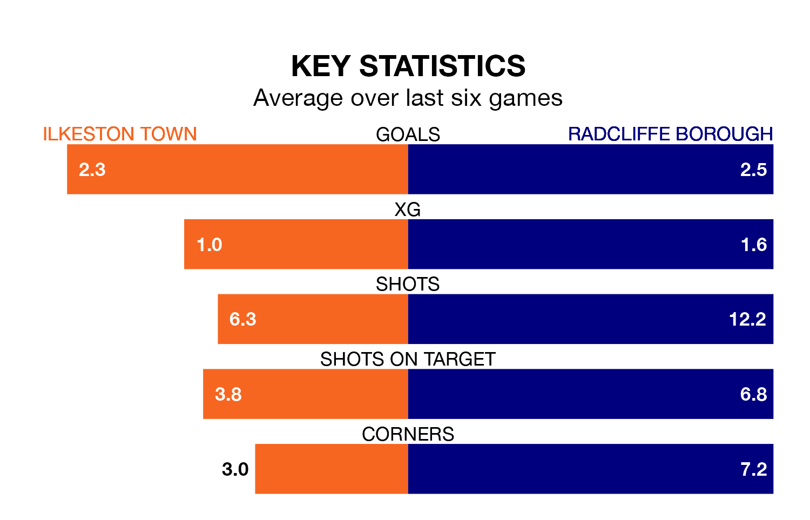

Radcliffe Borough are strong favourites to take all three points despite Ilkeston Town's home advantage in Saturday's match at the New Manor Ground.
*Betting Company* are offering odds of 1.64 on Radcliffe sealing the win, with the visitors sitting first in the Northern Premier League table.
Ilkeston, who are eighth in the league and 25 points behind the Boro, are priced at 3.75 to win. A draw is set at 4.15.
With 85 goals in 31 games so far this season, Radcliffe are the league's highest scorers with 2.7 goals per game. And they are conceding fewer than average, letting in 45 goals at a rate of 1.5 per game.
Ilkeston, meanwhile, are average scorers, with 1.7 goals per game. They have conceded 1.6 goals per game.
Town are in mixed form in the Northern Premier League, with three wins and a draw from their last six games.
With three wins and two draws over that period, Borough's form is slightly better – they have taken 11 points from 18, compared to the home side's 10.
Ilkeston's last match was on February 17, a 5-3 loss against Macclesfield.
Radcliffe beat Marine 3-2 last time out, also on February 17.
Updated: 10:08 (UTC), 23/02/24